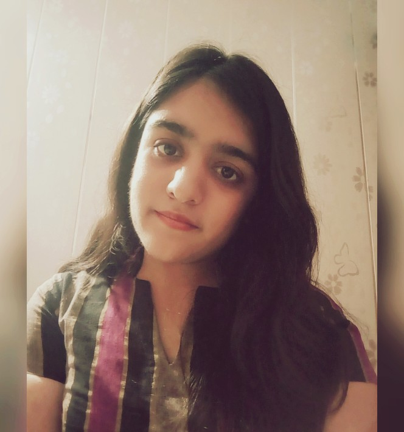

I am a 20 yr old self-taught artist from India. Currently pursuing engineering in Computer Science,
art is my escape from the reality.
My love for art started back in school when we used to have 'Art' as a subject. Recreating pictures from the artbook was my favorite activity then.
It made me realize that I am good at it and passionate about it.
Over the years, sketching and painting became my hobby, and my love for art deepened.
Making rangolis on Diwali, customized collages on birthdays and anniversaries has been fun ever since.
Back in school, we had to make one artwork per week, and I looked forward to it.
Staying up late at night to complete my artworks has never been a problem because I enjoy the process.
Not only Art, but I tried my hands at craft items too. Head over to the
craft cornerin my gallery to have a look.
When it comes to my art I am not restricted to any particular genre or media. Nature, birds, florals, still life, landscapes, and any event from day to day life capture my attention.
According to the type of artwork, the media I use are
micron pens, acrylics, oil pastels, watercolors, and have tried glass paints as well.
Generally, I take reference from Pinterest or view other art pages for inspiration. Practice and consistency will help me develop my art style soon, though.
Artists paint to untangle their souls.
They paint for the movement of the brush, the smear of paint, the feel of texture against the skin.
They paint for light and shadow and the discovering of what was not there before.
As an artist or a creator, one is never satisfied with his/her work and and tries to get better each time by learning from previous mistakes and applying new techniques; the same goes for me as well.
ARTIST STATEMENT : I get influenced by the space around us to which I have my perspective, observations, and experiences.
Art to me is a way of expression. It can fill every blank space with beautiful colors and can deliver your thoughts without saying a word.
As a person with deep perspectives, bringing in more depth into my paintings and making them more meaningful is what excites me.
Usually, I do art while listening to music, it acts as a boundary from the outside world, and then it's just me, my playlist, and
my art.
If you're an art lover too, feel free tojoin me on Instagram